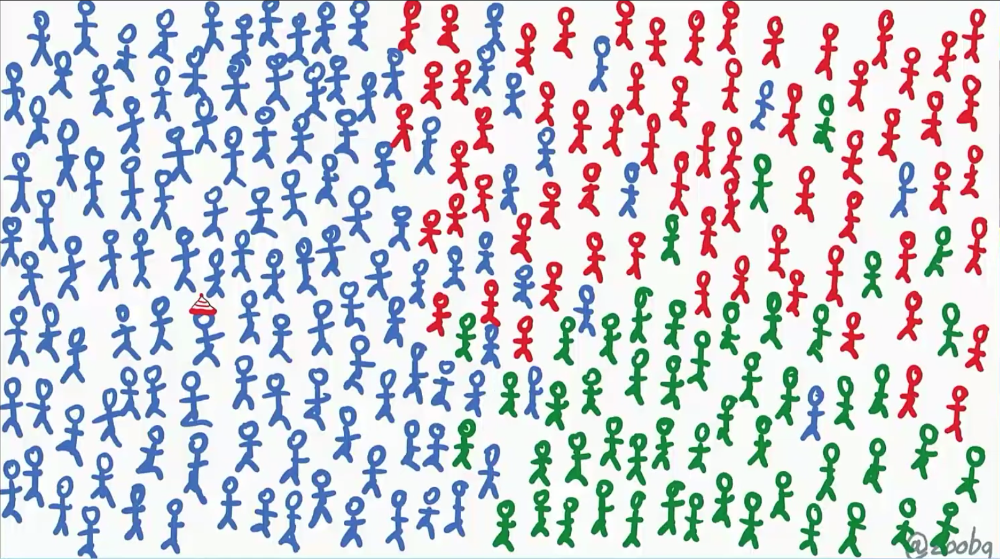
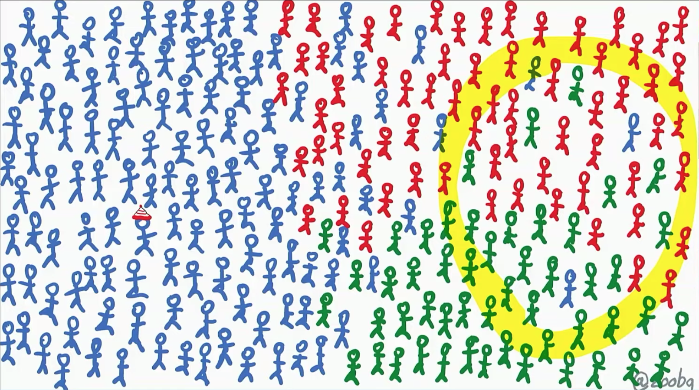
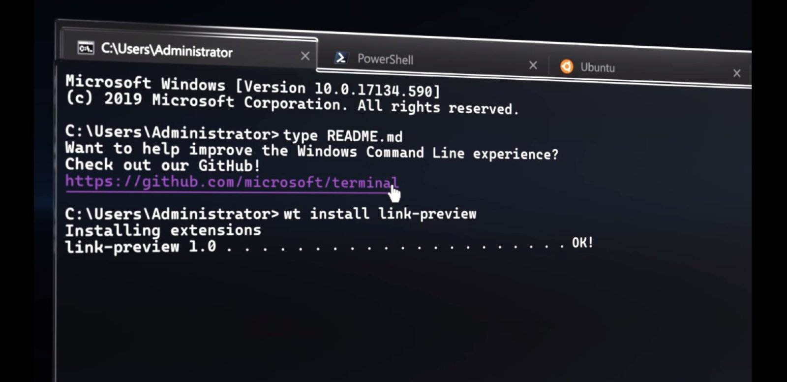
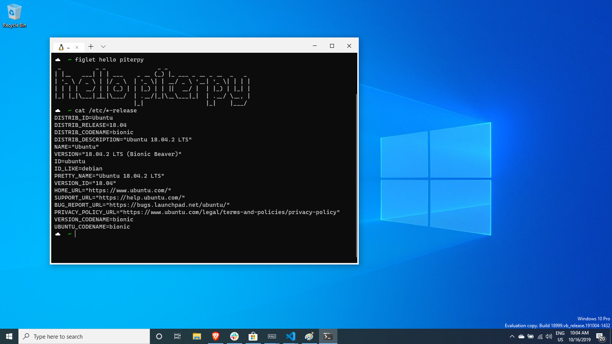
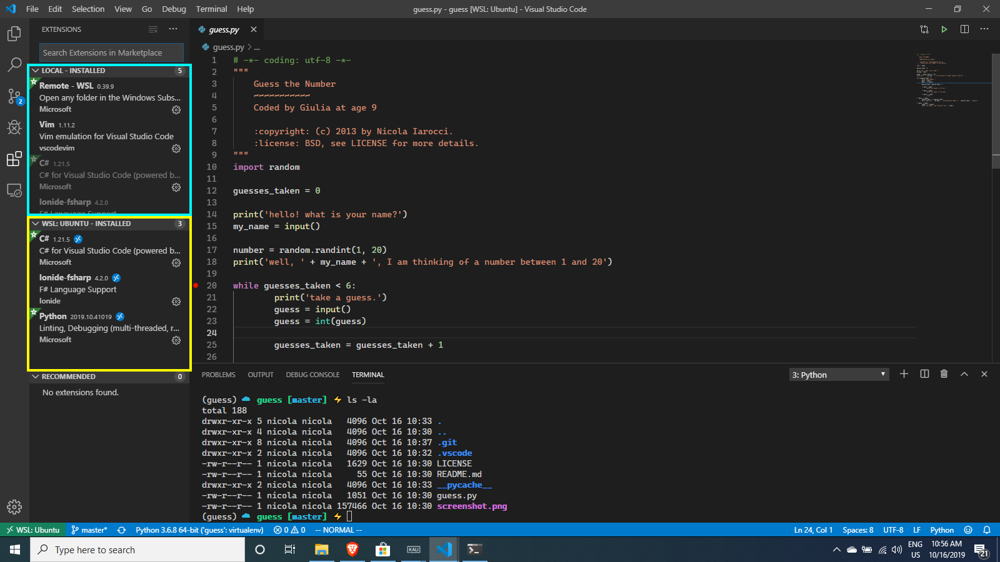

Python on Windows
State of the Art
Nicola Iarocci
@nicolaiarocci
Question
How many of you in this room are on Windows?
I am not surprised
The Goals of this talk
Quite ambitious ones
1. Awareness of Windows relevance for Python
2. Make your code "just work" on Windows
3. Wonders of Python development on Windows
(Not kidding about #3)


Python userbase
Python userbase (our perception)
Make sure your libs "just work" on Windows
- Make sure
-mworks on your project
- Use
pathlib.pathto handle paths
- Adopt
appdirsto store user and configuration data
-
Use
strand let Python handle OS conversions. Do your own IO stream conversions
- Get CI, collaborate, or...
(more info at https://youtu.be/uoI57uMdDD4)
Python development on Windows
- Python tooling has been rapidly evolving
- One-click install from the Microsoft Store
- Visual Studio has great Python support
- VSCode+Python extension works on Windows too
- A brand new Windows Terminal
- Windows Subsystem for Linux 2
One-click install from the Store

Visual Studio
- Python install from VS Installer
- Package Management
- Virtual Environments
- IntelliSense and code analysis
- Interactive debugging (remote too)
- Unit Tests
- Templates (Django, Flask, PyGame, etc.)
- Code Imports
- Jupyter support
- REPL
- Community edition is free
PyCharm also works great on Windows.
Windows Terminal (Preview)
Windows Terminal (Preview)
- Multiple Tabs
- Command Prompt, PowerShell, Linux
- GPU accelerated text rendering
- glyps, emojis, ideograms, symbols, icons, ligatures
- Fully configurable and custimizable via json
- Multiple profiles
- Cascadia Code font, with ligatures (Preview)
- Terminal is Open Source (link)
(cool video at https://aka.ms/terminal-video)
Windows Subsystem for Linux 2

WSL2 Quick Facts
Runs ELF64 Linux binaries on Windows
WSL2 Quick Facts
Windows ships with a Linux kernel

WSL2 Quick Facts
- WSL2 runs on a lightweight utility virtual machine
- Super fast boot, small footprint, zero configuration
- Both WSL2 and Linux kernel are Open Source (link)
One-click install of Linux distributions

DEMO #1
LINUX ON WINDOWS, WITH TERMINAL
Code + Remote + Linux
What are we looking at?

Code + Remote + Linux
Windows-side Code, connected to Linux

Code + Remote + Linux
Courtesy of Remote extension

Code + Remote + Linux
Extensions work across boundaries
DEMO #2
Code + Remote + Linux
WSL2 IS IN PREVIEW
JOIN THE INSIDER PROGRAM (Fast ring)

You also need to know
So you can avoid pain
- BIOS virtualization must be active
- Virtual Machine Platform feature must be active
- WSL feature must be active
- distros will be on WSL1 once installed
- status:
wsl --list --verbose* - switch to v2:
wsl --set-version Ubuntu 2* - set v2 as default:
wsl --set-default-version 2*
(*) in PowerShell, as admin
Suggested reading

Smashing Magazine (link)
Thank You!
Nicola Iarocci
@nicolaiarocci